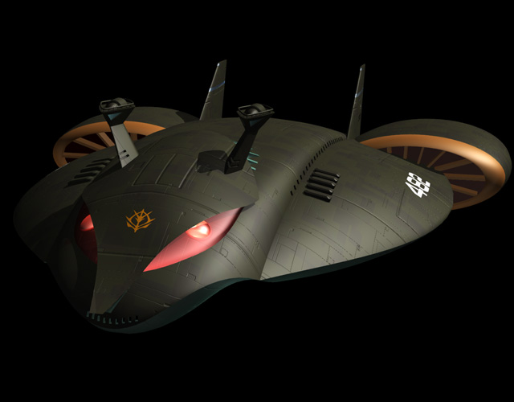

| Mad Angler Large-scale Zeon Duchy Combat Submarine |
|
|  | |
General and Technical Data |
|
|
Unit Type: large submarine tender Operator: Zeon Duchy Dimensions: overall height 115 meters, overall length 419 meters Propulsion system: 2 x hydrojet engine Hangar capacity: 12 mobile suits, 1 mobile armor Launch catapults: 0 Fixed armaments: 10 x surface-to-surface missile launcher; 9 x torpedo launcher Technical and Historical Notes Supplementary to the Jukon-class submarine, the Zeon wet navy needed to further their naval war machine with a large vessel to fill a number of roles in combat. The Mad Angler-class, as it became to be known, did all of these quite nicely. As a submarine tender, the Mad Angler is intended to help keep Jukon-class submarines supplied and armed in the field. Its two observation towers can be used to dock with Jukons while underwater and covertly transfer cargo and personnell. As a combat vessel, the Mad Angler fills a heavy attack role. Rather than be swift and nimble like a Jukon, the Mad Angler strives for pure firepower. For attacking land targets, the Mad Angler is equipped with ten long-range surface-to-surface vertical-launch missile bays. Originally intended to deliver nuclear weapons, they now usually carry a conventional payload. For marine combat, the Mad Angler is armed with nine torpedo launchers, all clustered around the bow and forward-facing. The Mad Angler is intended for the transport and fielding of heavy firepower, and it is no exception in either front. As a transport craft, the Mad Angler is supreme yet again. Its gargantuan hold can carry twelve marine mobile suits, and it is still capable of underwater deployment. Additionally, a special section of the hangar is devoted entirely towards the storage and maintainence of the new Grabro-class marine mobile armor. |
 RPG quick stats sheet
RPG quick stats sheet